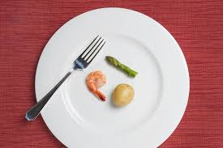

Comer bem não é comer pouco
Muitas pessoas ainda associam alimentação saudável a comer pouco ou fazer grandes restrições. Mas isso é um mito. Comer bem significa oferecer ao corpo os nutrientes de que ele precisa para funcionar bem — energia, vitaminas, minerais, fibras, proteínas e gorduras boas — mantendo equilíbrio, variedade e prazer.
1. Alimentação saudável não é restrição
Dietas muito restritivas podem gerar:
- queda de energia e disposição;
- dificuldade de concentração;
- aumento da fome ao longo do dia;
- maior risco de compulsão alimentar;
- prejuízo no metabolismo e no humor.
O corpo precisa de energia suficiente. Comer pouco demais pode fazer o organismo economizar energia, dificultando até mesmo a perda de peso.
2. O papel da variedade alimentar
Uma alimentação completa inclui alimentos de diferentes grupos:
- Frutas, legumes e verduras — fibras, vitaminas e minerais;
- Cereais e tubérculos — energia para as atividades do dia;
- Proteínas — construção e reparo dos tecidos;
- Gorduras boas — saciedade e saúde hormonal.
Quanto mais colorido o prato, maior a variedade de nutrientes.
3. Comer bem é ouvir o próprio corpo
Entender sinais de fome e saciedade é essencial para uma relação saudável com a comida. Isso inclui:
- comer quando sente fome real;
- parar quando está satisfeito — e não quando está “cheio demais”;
- comer sem culpa e com atenção plena.
4. Por que comer pouco pode ser prejudicial
A restrição alimentar severa pode levar a:
- efeito sanfona;
- perda de massa muscular;
- queda na imunidade;
- dificuldades hormonais;
- ansiedade e obsessão por comida.
O segredo de uma alimentação equilibrada está na constância, não no corte extremo.
5. O comer bem como um ato de cuidado
Mais do que seguir regras ou dietas da moda, alimentar-se bem é uma forma de cuidado consigo mesma. Significa escolher alimentos que trazem saúde física e mental, respeitando o corpo e suas necessidades individuais.
Referências utilizadas
- Ministério da Saúde — Guia Alimentar para a População Brasileira (2014).
- Harvard T.H. Chan School of Public Health — Healthy Eating Plate.
- Organização Pan-Americana da Saúde — Recomendações alimentares.
- Academy of Nutrition and Dietetics — Balanced Eating Guidelines.
← Voltar